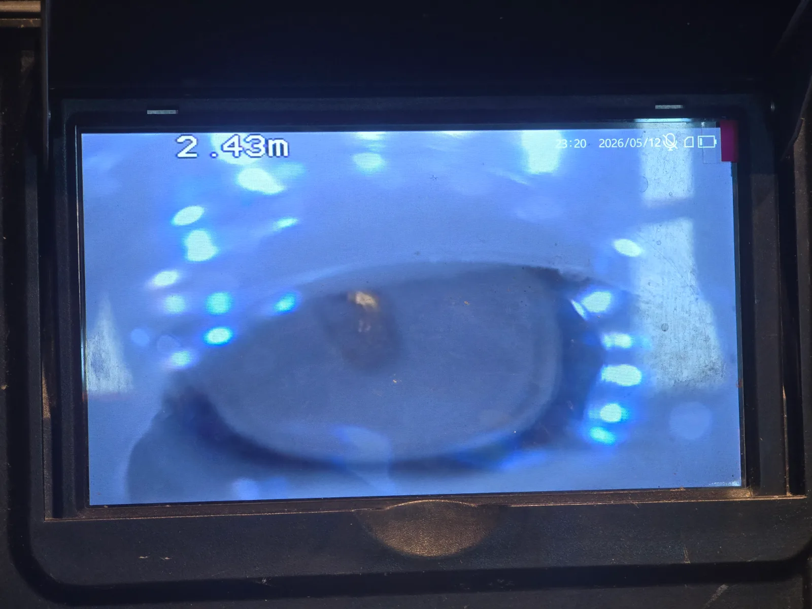

영등포구 대림동 싱크대막힘, 현장 도착 후 진단
영등포구 대림동 싱크대막힘 현장에 도착해 먼저 싱크볼의 배수 반응과 하부 배관 연결 상태를 점검했습니다. 겉으로 보이는 배수구에서는 막힘 원인을 확인할 수 없어 배관 내시경을 이용한 내부 검사를 진행했습니다.
내시경 카메라를 싱크대 배수관 안쪽으로 천천히 진입시키자 약 2.43m 지점에서 배관 통로를 가로막고 있는 물체가 포착됐습니다. 화면을 자세히 확인한 결과 일반적인 음식물이나 유지 슬러지가 아니라 금속 포크가 배관 내부에 들어가 있는 상태였습니다.
대림동 싱크대막힘의 원인이 단단한 이물질로 확인된 만큼 무리하게 밀어 넣을 경우 포크가 더 깊은 배관으로 이동하거나 배관 연결부에 걸릴 위험이 있었습니다. 따라서 내시경 화면으로 위치를 지속해서 확인하며 포크를 밖으로 꺼내는 방향으로 작업했습니다.
1단계: 증상 확인과 필요한 장비 작업
영등포구 대림동 현장의 싱크대 하부 공간과 배수관 연결 상태를 확인한 뒤 배관 내시경을 투입했습니다. 내시경 화면을 통해 포크가 걸린 정확한 거리와 방향을 파악하고, 배관을 손상시키지 않도록 제거 작업 지점을 확보했습니다.
단순한 기름때나 음식물 막힘과 달리 금속 포크는 샤프트나 관통 장비로 강하게 밀어낼 경우 배관 깊숙한 곳에서 더 큰 막힘을 유발할 수 있습니다. 이번 대림동 싱크대 배관은 이물질을 직접 회수하는 방식이 가장 안전하다고 판단했습니다.

2단계: 원인 구간 처리와 정상 작동 확인
배관 내부에서 포크가 움직이는 방향을 세밀하게 확인하며 이물질 제거 작업을 진행했습니다. 여러 차례 위치를 조정한 끝에 싱크대 배수관 안쪽에 걸려 있던 금속 포크를 외부로 완전히 꺼냈습니다.
포크를 제거한 뒤 싱크대에서 물을 충분히 흘려보내 배수 속도와 하부 배관 상태를 점검했습니다. 물이 정체되거나 다시 올라오는 현상 없이 원활하게 내려가면서 영등포구 대림동 싱크대막힘 작업을 마무리했습니다.

작업 결과와 재발 방지 안내
배관 내시경으로 막힘 원인을 정확하게 확인하고 내부에 들어가 있던 포크를 제거하면서 싱크대 배수 기능이 정상적으로 회복됐습니다. 이번 영등포구 싱크대막힘처럼 숟가락이나 포크 등의 주방용품이 배수구 안으로 들어가면 음식물과 기름때가 함께 걸리면서 막힘이 빠르게 심해질 수 있습니다.
싱크대 배수구에는 촘촘한 거름망을 사용하고 설거지 중 작은 식기류가 배수구로 들어가지 않도록 주의하는 것이 좋습니다. 이물질이 들어간 것으로 의심될 때는 더 깊이 밀어 넣지 말고 배관 내시경으로 위치를 확인해야 추가 손상을 예방할 수 있습니다. 신라건축설비는 대림동 싱크대막힘과 배관 이물질 제거 작업도 정확한 진단으로 늘 당신 곁에서 해결해드리겠습니다.
최종 조치: 배관 내시경을 투입해 싱크대 배수관 내부를 점검하고 약 2.43m 지점에서 포크 형태의 이물질을 확인했습니다. 포크의 위치와 배관 구조를 파악한 뒤 배관에서 안전하게 꺼내고 물을 충분히 흘려보내 정상적인 배수 상태를 확인했습니다.
현장 방문 전 확인하는 비용과 작업 범위
신라건축설비는 현장 증상과 배관 구조를 확인한 뒤 필요한 작업과 예상 비용을 안내합니다. 단순 관통으로 해결되는지, 배관내시경·석션·고압세척 또는 추가 장비가 필요한지는 현장 상태에 따라 달라집니다. 출장비와 야간 작업비, 추가 장비 비용이 발생할 수 있는 경우 작업 전에 먼저 설명하고 동의를 받은 범위에서 진행합니다.
업체를 선택할 때 확인할 사항
무조건적인 ‘0원’ 표현보다 실제 작업 범위, 추가 비용 조건, 사용 장비와 사후 대응 기준을 확인하는 것이 중요합니다. 해결되지 않았을 때의 비용 기준과 작업 후 동일 증상 발생 시 점검 범위를 사전에 문의해두면 불필요한 분쟁을 줄일 수 있습니다.
영등포구 싱크대막힘 자주 묻는 질문
싱크대 물이 천천히 내려가면 바로 점검해야 하나요?
싱크대에서 사용한 물이 원활하게 빠지지 않고 배수가 느려지는 증상이 발생했습니다. 물을 계속 사용하면 싱크볼에 물이 고이거나 역류할 가능성이 있어 정확한 원인 확인이 필요한 상태였습니다.처럼 증상이 나타나더라도 원인은 현장마다 다를 수 있습니다. 장비와 배관 구조를 확인한 뒤 필요한 작업 범위를 안내합니다.
작업 전 비용을 알 수 있나요?
작업 전 증상과 현장 여건을 확인해 예상 범위와 비용을 먼저 안내합니다. 변기 탈거, 장비 추가 투입 또는 공용배관 작업이 필요한 경우 고객 동의 없이 임의로 진행하지 않습니다.
약품으로 해결되지 않으면 어떻게 하나요?
완료 후 정상 작동을 함께 확인하고 작업 범위에 따른 사후 안내를 드립니다. 동일 증상이 반복되면 현장 기록을 기준으로 원인을 다시 점검합니다.
싱크대막힘 서울·경기 출동지역
신라건축설비는 영등포구 대림동 현장을 포함해 서울 25개 구와 경기도 31개 시·군의 배관 문제를 상담합니다. 현장 거리와 기사 배정 상황에 따라 출동 가능 여부를 먼저 안내드립니다.
서울 전 지역
강남구 · 강동구 · 강북구 · 강서구 · 관악구 · 광진구 · 구로구 · 금천구 · 노원구 · 도봉구 · 동대문구 · 동작구 · 마포구 · 서대문구 · 서초구 · 성동구 · 성북구 · 송파구 · 양천구 · 영등포구 · 용산구 · 은평구 · 종로구 · 중구 · 중랑구
경기도 주요 출동지역
수원시 · 용인시 · 고양시 · 화성시 · 성남시 · 부천시 · 남양주시 · 안산시 · 평택시 · 안양시 · 시흥시 · 파주시 · 김포시 · 의정부시 · 광주시 · 하남시 · 광명시 · 군포시 · 양주시 · 오산시 · 이천시 · 안성시 · 구리시 · 의왕시 · 포천시 · 양평군 · 여주시 · 동두천시 · 과천시 · 가평군 · 연천군